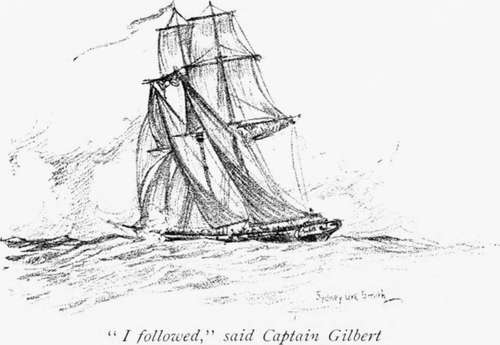

A Mysterious Affair. An Episode Of The Thirties
Description
This section is from the book "Stories Of Old Sydney", by Charles H. Bertie.
A Mysterious Affair. An Episode Of The Thirties
ONE Sunday morning in the month of April, 1831, the good people of Sydney were astonished to see the ship Edward sail into port. A week before, this vessel had departed from Sydney bound for Batavia, yet here she was returning to port, and soon after her captain landed rumours of piracy and mutiny on the high seas ran through the town. A reporter from the " Sydney Gazette " waited on Captain Gilbert, the commander of the ship, and this was the mournful and tragic tale told by the captain.
The Edward had sailed from Port Jackson on the 26th of March, 1831, in company with the ship York, which was bound for Madras with a detachment of the 57th Regiment. The York was commanded by Captain Leary, who was unfamiliar with the passage of Torres Straits, and had arranged with the captain of the Edward for the two ships to keep company until the Straits wrere cleared. Here we will allow the editor of the " Sydney Gazette " to take up the tale. His account was written the day after the return of the Edzvard, and has therefore the charm of freshness. From him T have borrowed also the heading of this chapter.
" Having very little wind, their progress was slow, and on Tuesday last, the 29th, they had reached no farther than the latitude of Port Macquarie, and were about four degrees off that coast. Both vessels were sailing E.N.E., the course which had been mutually agreed upon until day-break on the Wednesday morning, when they were again to consult for the day.
" So anxious, indeed, was Captain Leary to act in concert with his fellow-voyager, that on Wednesday he wrote a note to that gentleman minutely stating what he understood to be the arrangement for the night, and expressing his determination to adhere strictly to it. About 5 o'clock in the afternoon, the hour at which the military gentlemen dined, the York was observed suddenly to change her course from E.N.E. to S.E.. without any sort of intimation to Captain Gilbert of her reasons for so doing. Her stern sails were set, and it appeared that she was pursuing her new tack with all possible despatch rFhe ships, at the moment this alteration took place, were about two or three miles apart, the Edward being in advance; but the latter being by far the better sailer, Captain Gilbert instantly pursued his comrade to demand an explanation, and at about 11 o'clock at night came within hail. When his approach was observed, the York again shifted her course to S.W. Captain Gilbert remonstrated against this strange conduct, and called loudly for Captain Leary, but without receiving one word of reply, the York continued to sheer off. Gilbert, however, still pressed after, and on again coming up, renewed his calls for Leary, when a man dressed in a long frock coat was seen to leap upon the York's poop, and cried out in a strange voice ' What do you want?' ' I want Captain Leary,' was Gilbert's answer, ' and you are steering wrong.' ' No,' replied the same voice, ' we are going through Bass' Straits.' ' Then,' said Gilbert, ' if you have no chart you had better come on board of me, for you are steering wrong for the Straits. You are not Captain Leary. Where is he? It you don't bring to, I'll run you down.' They again sheered off. ' I followed,' says Captain Gilbert, ' and came up a third time, and hailed them the same as before. They backed the main-yard, and endeavoured to get round me, as I supposed, to have boarded me. Finding what they were about, I filled my main-sail, and left them at 3 in the morning of Wednesday the 30th. They were then steering towards the S.W. of New Zealand. I heard two guns go off, and saw the flashes. In the afternoon I signalled him that if the wind changed in the night to steer N.; he directly up stick and steered S. When they did this they hoisted Marryat's signal. Under orders, bear away, come up. Both myself, officers and men then thought the ship was taken, for Leary was most anxious that I should not leave them on any account.'
"Nothing now remained for Captain Gilbert but to put back to Sydney and report the extraordinary transaction. To have attempted to take the York by force, filled as she was with armed soldiers, would have been madness, and the only way in which he had it in his power to serve the cause of humanity and his country, was to interrupt his own voyage by returning with the mysterious tidings."
At this point our editor indulges in some speculations.
" What could have led the unhappy men to so desperate a measure, or by what means so large a body of British troops could have been inveigled into so sudden a conspiracy, or in what part of the world the}' could dream of finding an asylum from justice, it is not easy to conjecture. The only suppos-able cause of the mutiny is that aversion to the India service which the military in general feel-but this, for an act so full of peril, is a most inadequate reason; the dangers of the climate of India were nothing to be compared with the fearful hazards of seizing the ship. To what part of the globe could they go with any chance of finding a secure home? If they went to anv of the South Sea Islands, their numbers would expose them to famine, or to the fierce jealousy of the natives. If to South America, they would be almost sure to fall in with British ships of war, wrhich are continually cruising ofif the whole line of the coast. To remain long at sea was out of the question, for their provisions would soon fall short. Nothing, then, was before them but the extremest danger, and the most probable of their dreadful chances was, that they would, sooner or later, be apprehended."
To maintain the interest of the story, and to build up the dramatic situation, it is necessary now to pull out the quiver ing, sorrowful tremolo stop. Here I find my editor at his best, and 'twould be but vanity on my part to disturb so much as a comma.
Continue to:
- prev: A Ramble Round Old Sydney. Continued
- Table of Contents
- next: A Mysterious Affair. An Episode Of The Thirties. Continued